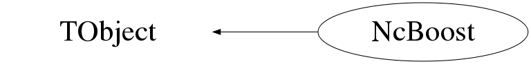

class NcBoost: public TObject
Class NcBoost Perform various Lorentz transformations. Example : Float_t a[3]={0.1,0.2,0.3}; Float_t ea[3]={0.01,0.02,0.03}; Nc3Vector beta; beta.SetVector(a,"car"); beta.SetErrors(ea,"car"); NcBoost b1; b1.SetBeta(beta); b1.Data(); Float_t b[4]={14,1,2,3}; Float_t eb[4]={1.4,0.1,0.2,0.3}; Nc4Vector p; p.SetVector(b,"car"); p.SetErrors(eb,"car"); Nc4Vector pprim=b1.Boost(p); p.Data(); pprim.Data(); p=b1.Inverse(pprim); pprim.Data(); p.Data(); Float_t c[4]={5,0,0,4}; Float_t ec[4]={0.5,0,0,0.4}; Nc4Vector q; q.SetVector(c,"car"); q.SetErrors(ec,"car"); NcBoost b2; b2.Set4Momentum(q); b2.Data("sph"); --- Author: Nick van Eijndhoven 14-may-1996 Utrecht University - Modified: NvE $Date: 2016-05-19 20:01:23 +0200 (Thu, 19 May 2016) $ NCFS
Function Members (Methods)
public:
| NcBoost() | |
| NcBoost(const NcBoost& b) | |
| virtual | ~NcBoost() |
| void | TObject::AbstractMethod(const char* method) const |
| virtual void | TObject::AppendPad(Option_t* option = "") |
| Nc4Vector | Boost(Nc4Vector& v) |
| virtual void | TObject::Browse(TBrowser* b) |
| static TClass* | Class() |
| virtual const char* | TObject::ClassName() const |
| virtual void | TObject::Clear(Option_t* = "") |
| virtual TObject* | TObject::Clone(const char* newname = "") const |
| virtual Int_t | TObject::Compare(const TObject* obj) const |
| virtual void | TObject::Copy(TObject& object) const |
| void | Data(TString f = "car") |
| virtual void | TObject::Delete(Option_t* option = "")MENU |
| virtual Int_t | TObject::DistancetoPrimitive(Int_t px, Int_t py) |
| virtual void | TObject::Draw(Option_t* option = "") |
| virtual void | TObject::DrawClass() constMENU |
| virtual TObject* | TObject::DrawClone(Option_t* option = "") constMENU |
| virtual void | TObject::Dump() constMENU |
| virtual void | TObject::Error(const char* method, const char* msgfmt) const |
| virtual void | TObject::Execute(const char* method, const char* params, Int_t* error = 0) |
| virtual void | TObject::Execute(TMethod* method, TObjArray* params, Int_t* error = 0) |
| virtual void | TObject::ExecuteEvent(Int_t event, Int_t px, Int_t py) |
| virtual void | TObject::Fatal(const char* method, const char* msgfmt) const |
| virtual TObject* | TObject::FindObject(const char* name) const |
| virtual TObject* | TObject::FindObject(const TObject* obj) const |
| Double_t | GetBeta() |
| Nc3Vector | GetBetaVector() const |
| virtual Option_t* | TObject::GetDrawOption() const |
| static Long_t | TObject::GetDtorOnly() |
| Double_t | GetGamma() |
| virtual const char* | TObject::GetIconName() const |
| virtual const char* | TObject::GetName() const |
| virtual char* | TObject::GetObjectInfo(Int_t px, Int_t py) const |
| static Bool_t | TObject::GetObjectStat() |
| virtual Option_t* | TObject::GetOption() const |
| Double_t | GetResultError() const |
| virtual const char* | TObject::GetTitle() const |
| virtual UInt_t | TObject::GetUniqueID() const |
| virtual Bool_t | TObject::HandleTimer(TTimer* timer) |
| virtual ULong_t | TObject::Hash() const |
| virtual void | TObject::Info(const char* method, const char* msgfmt) const |
| virtual Bool_t | TObject::InheritsFrom(const char* classname) const |
| virtual Bool_t | TObject::InheritsFrom(const TClass* cl) const |
| virtual void | TObject::Inspect() constMENU |
| Nc4Vector | Inverse(Nc4Vector& v) |
| void | TObject::InvertBit(UInt_t f) |
| virtual TClass* | IsA() const |
| virtual Bool_t | TObject::IsEqual(const TObject* obj) const |
| virtual Bool_t | TObject::IsFolder() const |
| Bool_t | TObject::IsOnHeap() const |
| virtual Bool_t | TObject::IsSortable() const |
| Bool_t | TObject::IsZombie() const |
| virtual void | TObject::ls(Option_t* option = "") const |
| void | TObject::MayNotUse(const char* method) const |
| virtual Bool_t | TObject::Notify() |
| void | TObject::Obsolete(const char* method, const char* asOfVers, const char* removedFromVers) const |
| static void | TObject::operator delete(void* ptr) |
| static void | TObject::operator delete(void* ptr, void* vp) |
| static void | TObject::operator delete[](void* ptr) |
| static void | TObject::operator delete[](void* ptr, void* vp) |
| void* | TObject::operator new(size_t sz) |
| void* | TObject::operator new(size_t sz, void* vp) |
| void* | TObject::operator new[](size_t sz) |
| void* | TObject::operator new[](size_t sz, void* vp) |
| NcBoost& | operator=(const NcBoost&) |
| virtual void | TObject::Paint(Option_t* option = "") |
| virtual void | TObject::Pop() |
| virtual void | TObject::Print(Option_t* option = "") const |
| virtual Int_t | TObject::Read(const char* name) |
| virtual void | TObject::RecursiveRemove(TObject* obj) |
| void | TObject::ResetBit(UInt_t f) |
| virtual void | TObject::SaveAs(const char* filename = "", Option_t* option = "") constMENU |
| virtual void | TObject::SavePrimitive(ostream& out, Option_t* option = "") |
| void | Set4Momentum(Nc4Vector& p) |
| void | SetBeta(Nc3Vector& b) |
| void | TObject::SetBit(UInt_t f) |
| void | TObject::SetBit(UInt_t f, Bool_t set) |
| virtual void | TObject::SetDrawOption(Option_t* option = "")MENU |
| static void | TObject::SetDtorOnly(void* obj) |
| static void | TObject::SetObjectStat(Bool_t stat) |
| virtual void | TObject::SetUniqueID(UInt_t uid) |
| virtual void | ShowMembers(TMemberInspector&) |
| virtual void | Streamer(TBuffer&) |
| void | StreamerNVirtual(TBuffer& ClassDef_StreamerNVirtual_b) |
| virtual void | TObject::SysError(const char* method, const char* msgfmt) const |
| Bool_t | TObject::TestBit(UInt_t f) const |
| Int_t | TObject::TestBits(UInt_t f) const |
| virtual void | TObject::UseCurrentStyle() |
| virtual void | TObject::Warning(const char* method, const char* msgfmt) const |
| virtual Int_t | TObject::Write(const char* name = 0, Int_t option = 0, Int_t bufsize = 0) |
| virtual Int_t | TObject::Write(const char* name = 0, Int_t option = 0, Int_t bufsize = 0) const |
protected:
| virtual void | TObject::DoError(int level, const char* location, const char* fmt, va_list va) const |
| void | TObject::MakeZombie() |
Data Members
public:
| enum TObject::EStatusBits { | kCanDelete | |
| kMustCleanup | ||
| kObjInCanvas | ||
| kIsReferenced | ||
| kHasUUID | ||
| kCannotPick | ||
| kNoContextMenu | ||
| kInvalidObject | ||
| }; | ||
| enum TObject::[unnamed] { | kIsOnHeap | |
| kNotDeleted | ||
| kZombie | ||
| kBitMask | ||
| kSingleKey | ||
| kOverwrite | ||
| kWriteDelete | ||
| }; |
protected:
| Nc3Vector | fBeta | The beta 3-vector |
| Double32_t | fDgamma | Error on the gamma value |
| Double32_t | fDresult | ! Error on scalar result |
| Double32_t | fGamma | The gamma factor |
Class Charts
{kind=link}
{kind=link}
{kind=link}
{kind=link}

Function documentation
NcBoost()
Creation of a Lorentz boost object and initialisation of parameters. Beta is set to (0,0,0) and consequently Gamma=1. All errors are initialised to 0.
void SetBeta(Nc3Vector& b)
Setting of boost parameters on basis of beta 3-vector. The errors on the beta 3-vector are taken from the input 3-vector. The gamma value and its error are calculated accordingly.
void Set4Momentum(Nc4Vector& p)
Setting of boost parameters on basis of momentum 4-vector data. The errors of the input 4-vector are used to calculate the errors on the beta 3-vector and the gamma factor.
Double_t GetBeta()
Provide the norm of the beta 3-vector. The error on the value can be obtained via GetResultError().
Double_t GetGamma()
Provide the gamma factor. The error on the value can be obtained via GetResultError().
Double_t GetResultError() const
Nc4Vector Boost(Nc4Vector& v)
Perform the Lorentz boost on the 4-vector v. Error propagation is performed automatically. Note : As an approximation Beta and p.Dot(Beta) are considered as independent quantities.
Nc4Vector Inverse(Nc4Vector& v)
Perform the inverse Lorentz boost on the 4-vector vprim. Error propagation is performed automatically. Note : As an approximation Beta and pprim.Dot(Beta) are considered as independent quantities.